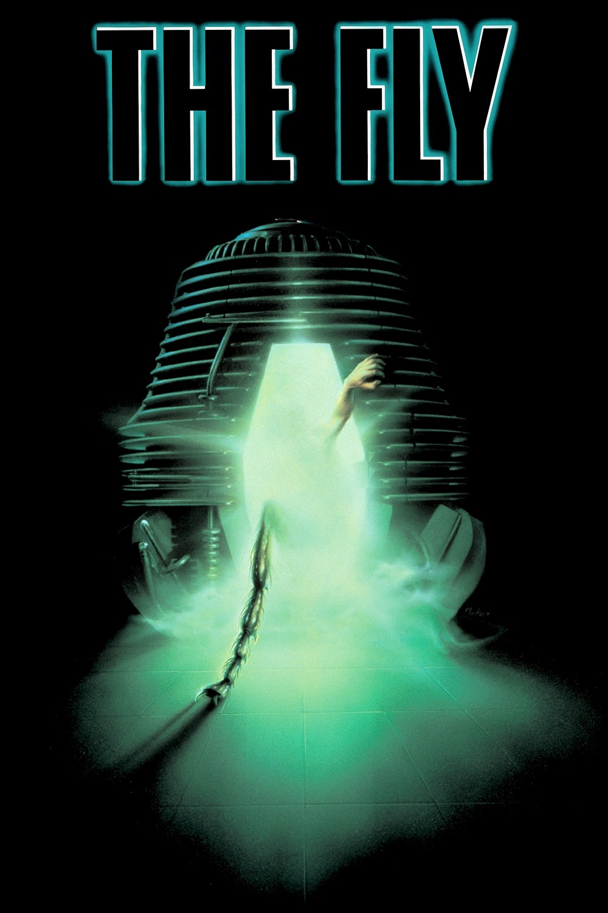

The Fly
Basic Information
Release date - 1986 Run Time - 96 minutes Rating - R Budget - $15 million Box Office - $60.6 million Distributed by - 20th Centuary FoxSynopsis
A brilliant but eccentric scientist begins to transform into a giant man/fly hybrid after one of his experiments goes horribly wrong.Cast
Jeff Goldblum as Seth BrundleGeena Davis as Veronica "Ronnie" Quaife
John Getz as Stathis Borans
Joy Boushel as Tawny
Leslie Carlson as Dr. Brent Cheevers
George Chuvalo as Marky
David Cronenberg as a Gynecologist
Crew
Directed by David CronenbergScreenplay by Charles Edward Pogue
Screenplay by David Cronenberg
Produced by Stuart Cornfeld
Cinematography Mark Irwin
Edited by Ronald Sanders
Music by Howard Shore